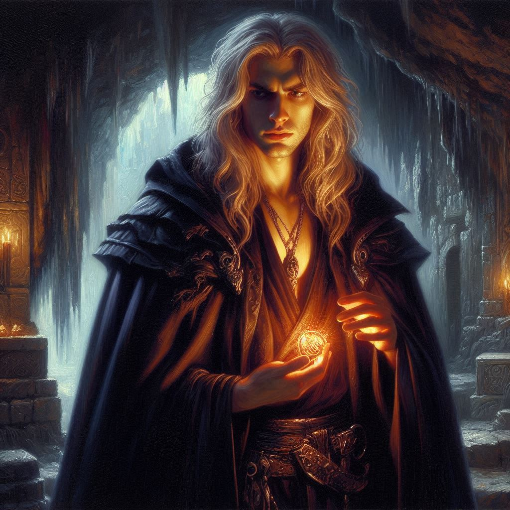
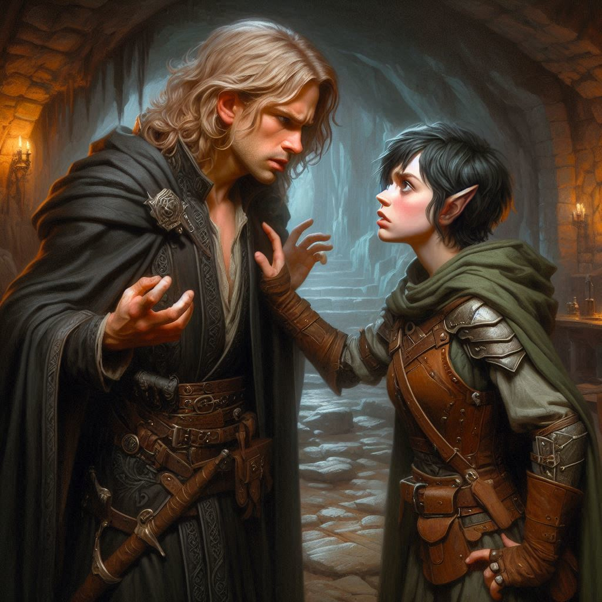
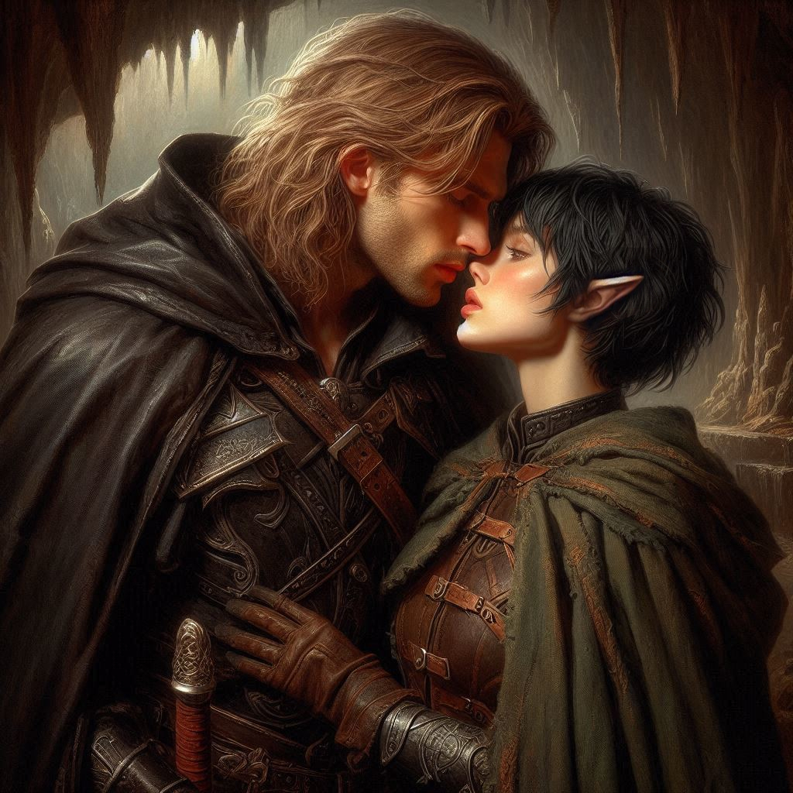

Secrets Best Kept in the Dark
“Princess,” you begin. “I think you should stand guard outside the cavern to make sure we’re not being followed or ambushed. I’ll scout ahead a few clicks to make sure there are no traps in our path. Once I determine the path is clear, I’ll come back and get you.”
“You want me to wait here alone?” she asks, her steely resolve melting further away.
“Yes. Hide in the shadows of these monuments and ambush anyone that may be tracking us,” you suggest.
She looks at the monuments and nods. “Fine,” she finally says, drawing her sword. “I’ll keep watch, but hurry.”
“I will,” you promise, glad that you don’t have the added burden of protecting the heir to the throne inside the unknown territory that lies ahead. You pat her reassuringly on the shoulder as she turns away and finds a spot in the shadows of the enormous statues. With a sigh, you light a torch from your pack and enter the darkness.
The caverns of Hemlock Falls are dark and cold, the sound of water echoing through the jagged stone walls. You’ve been following the faint signs of Jorsh’s presence—scorch marks from magical spells, discarded scraps of parchment with strange symbols—but the deeper you go, the heavier your steps become. The air here feels thick with magic, ancient and dangerous.
You finally reach a large, open chamber, dimly lit by the glow of enchanted crystals embedded in the stone. The sound of your footsteps is drowned out by the roar of the falls cascading somewhere nearby. For a moment, you pause, scanning the shadows. You know he’s here.
And then, you see him.
Jorsh steps out from behind a large pillar of stone, his dark robes sweeping the ground as he moves. His once-boyish face is sharper now, gaunt, and lined with exhaustion. His eyes—once so familiar, filled with laughter—are hollow, consumed by something far darker. The man standing before you is a stranger, yet something in your chest twists at the sight of him.
“Kira,” he says, his voice low and weary. “I knew you’d come.”
You tense, your hand falling to the hilt of your sword, but you don’t draw it—not yet. “Jorsh,” you reply, your heart pounding in your chest. “It’s over. You need to stop this.”
He laughs bitterly, the sound echoing off the cavern walls. “Stop? You still don’t understand, do you?” He steps closer, his eyes blazing with an intensity that sends a chill down your spine. “I’m doing this for us. For everything we once believed in.”
You frown, struggling to reconcile the man in front of you with the boy you once knew—the boy you once loved. “This isn’t you, Jorsh. You’ve gone too far.”
“Too far?” He takes another step, his voice rising with desperation. “Do you know what they did to my family? What the Minister of Trade did? My father died penniless because of the kingdom’s corruption, and for what? So they could grow fat on the backs of people like us? No, Kira. I won’t stand by and let them take everything from me.”
His words hit harder than you expected, the memories of your childhood together resurfacing in painful clarity. You remember his father, the kind merchant who always treated you like family, who brought you sweets when he came to your village. You remember Jorsh’s laughter, the way you’d race through the fields together, dreaming of a future far beyond the borders of your small world.
But that was a lifetime ago.
“You think this is the way to fix things?” you ask, your voice quieter now. “By summoning dark magic? By becoming the very thing we used to hate?”
Jorsh’s face twists with anger. “You don’t understand! I found the map, Kira. I found the key to our future. With the treasure hidden in these caverns, I can restore my family’s legacy. I can destroy the Minister, the corrupt nobles—everything that ruined us.”
“And what about the dark elves?” you counter, your voice sharp. “What happens when they come through that portal? You think they’ll just hand over the treasure and walk away? They’ll destroy everything in their path—including you.”
Jorsh’s eyes flicker with uncertainty for a moment, but then he shakes his head, his jaw tightening. “I can control them. I have the power.”
You feel a surge of emotion—anger, frustration, but also something softer. The boy you once cared about is still in there, somewhere, trapped beneath the layers of bitterness and obsession. You want to reach him, to pull him back from the edge, but you’re not sure if it’s too late.
“I don’t want to hurt you, Jorsh,” you say, taking a step closer. “But I can’t let you do this.”
He looks at you, his expression conflicted. For a moment, you think he might listen, might stop this madness. But then, something shifts in his eyes—something darker, more desperate.
“You don’t get it, Kira,” he says, his voice breaking. “I’m doing this for us. For everything we lost.”
And then, in a flash, he closes the distance between you. His hand reaches out, gripping your arm tightly, and for a second, the years between you fall away. You see the boy you once knew, the one who held your hand in secret, who whispered promises of adventure and freedom.
Your heart aches with the weight of it all—of the bond you once shared, now shattered by time and circumstance. You want to save him. But you know you can’t.
“Jorsh,” you whisper, your voice barely audible. He leans in close, your lips only inches apart as he looks into your eyes.
For a heartbeat, he hesitates, his grip loosening. You see the conflict in his eyes, the war raging inside him. But then, just as quickly, the moment passes. His expression hardens, and he pulls away, stepping back into the shadows.
“I won’t stop,” he says, his voice cold. “You wouldn’t either, if you were me. And what you should be doing… if you truly love Belladonna and the good people of the kingdom… what you should be doing is arresting Hawthorn. It’s time for revolution. They say I’m corrupt for learning dark magic, but I’m going to stop the Dark Elves from invading the kingdom with their own dark magic. And I’m going to restore the kingdom to its former glory. Before the corruption of the Hawthorns. You could help me change everything, Kira. The choice is yours.”
Your heart sinks, and you feel your resolve falter. Is the boy you once loved gone, replaced by a man driven by darkness? Or is he a revolutionary obsessed with saving the kingdom? Do you honor your mission and your duty to the crown? Or do you join the man you were once so hopelessly infatuated with and fight the corruption of the kingdom at his side?
Without another word, Jorsh turns and disappears into the depths of the cavern, leaving you standing there, your emotions a tangled mess. You feel the weight of the mission pressing down on you—heavier now than it’s ever been. You could have stopped him. But you didn’t.
As you stand there, alone in the flickering light of the enchanted crystals, your mind drifts back to Princess Hawthorn, and to Elias. Both of them pulled into this web of treachery and magic, both of them depending on you to do the right thing.
But what is the right thing?